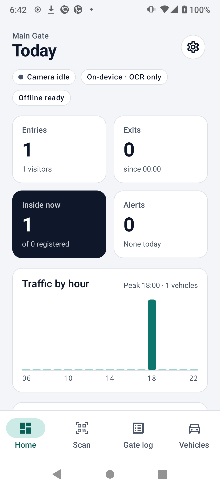
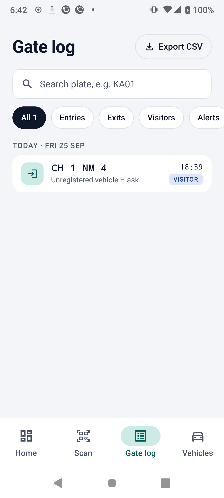
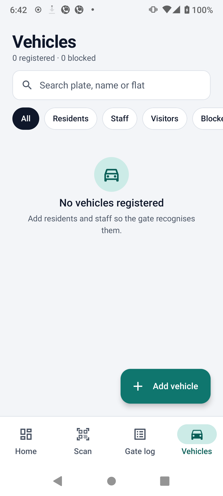

A phone at the gate that reads number plates without the internet
Mount an Android phone at a society, campus or parking gate. It reads each vehicle's plate with AI running on the phone, checks it against your list of registered vehicles, tells the guard what to do, and keeps a digital gate register.
What happens when a car arrives
The camera watches the lane
The phone looks at 10–30 frames every second.
AI finds the plate
A small detection model (YOLOv8n on LiteRT) draws a box around the plate, using the phone's GPU when it can. Without a model file, the whole frame goes to OCR instead.
The characters are read
Google ML Kit text recognition reads the cropped plate, on the device.
Common mistakes are fixed
Indian plates follow a fixed pattern, so the app knows which positions must be letters and which must be digits, and corrects look-alikes such as O/0 and B/8.
Several frames must agree
One blurry frame can't trigger a decision. The same plate has to be read in at least 3 frames within 2 seconds.
The gate rules decide
The app looks up the plate and shows the guard Allow, Visitor or Deny, then writes the event to the gate log.
How a misread gets fixed
Bharat-series plates like 22 BH 1234 AA are supported too.
What the guard sees
If the same plate is confirmed again within the cooldown (60 seconds by default), it's ignored, so a car waiting at the barrier isn't logged twice.
Entry or exit?
One phone per lane
Set the phone to Entry only or Exit only. This is the most reliable setup.
One phone, shared gate
In Auto mode, a vehicle that's already inside is logged as an exit, and every other vehicle as an entry.
Screens



Privacy
The app doesn't request internet permission. Camera frames are processed in memory and thrown away. Only the plate text, the time and the decision are saved, and the register is excluded from cloud backups.
Old log entries are deleted automatically after the retention period you set (90 days by default).
Set up a gate
Install the app
Android 8.0 or newer. Build it from the source code below.
Name the gate and pick a mode
In Settings, choose Entry only, Exit only or Auto, and add the supervisor's phone number.
Register vehicles
Add residents, staff and expected visitors. Block any vehicle that shouldn't be let in.
Mount the phone
Point it at the lane at about plate height, where cars slow down. Plug it in to charge.
For developers
git clone https://github.com/chinmay4github1987/EdgeGate-ANPR.git
cd EdgeGate-ANPR
./gradlew :core:test # rules, voting and plate parsing
./gradlew :app:installDebug # phone connected over USBFull details: Project documentation